Mixages¶
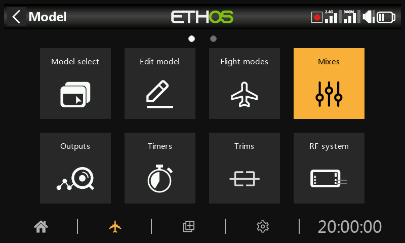
Les mixages sont le cœur de la programmation d'un modèle dans Ethos — c'est ici que les entrées (manches, interrupteurs, capteurs, tout ce qu'une source peut atteindre) sont acheminées, mises en forme et combinées vers les voies de sortie. Jusqu'à 120 mixages peuvent être définis par modèle.
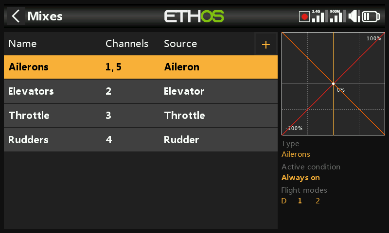
Si un modèle a été créé avec l'assistant Choix du modèle, ses mixages de
base (ailerons, profondeur, gaz, dérive et tout ce que la cellule requiert)
sont déjà présents ici. Sélectionner un mixage et appuyer sur ENT ouvre un
menu contextuel permettant de le modifier, d'ajouter un nouveau mixage, de
passer à la vue par voie, de le réordonner, de le
dupliquer ou de le supprimer. Les mixages inactifs sont grisés, et toute
suppression demande d'abord une confirmation.
Anatomie d'un mixage¶
Chaque mixage partage le même ensemble de champs, quelle que soit la catégorie dont il provient. Le mixage ailerons en est un exemple représentatif — les mixages de profondeur et de dérive sont organisés de façon identique.
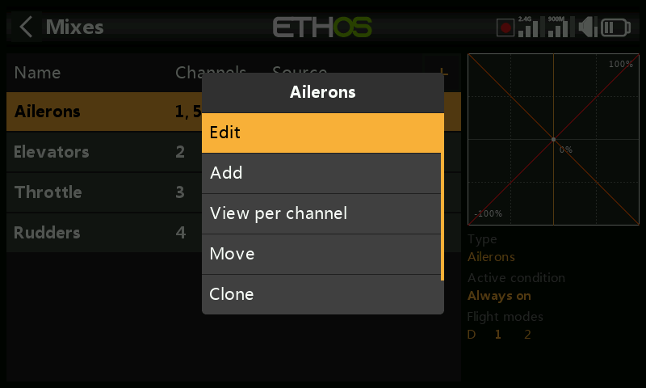
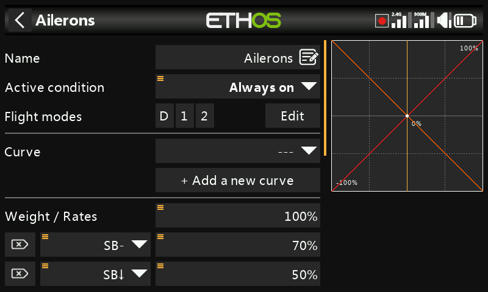
Nom — reprend par défaut le type de mixage, modifiable.
Condition — Toujours par défaut. Peut être limitée à une position d'interrupteur, un interrupteur de fonction, un interrupteur logique, une phase de vol, un événement système (coupure gaz/maintien gaz) ou une position de trim, auquel cas le mixage ne s'applique que lorsque la condition est vraie.
Phases de vol — si des phases de vol sont définies, le mixage peut en outre être limité à une ou plusieurs d'entre elles.
Courbe — une courbe Expo est disponible par défaut (0 = linéaire ; une valeur positive adoucit la réponse autour du neutre, une valeur négative la rend plus vive) :
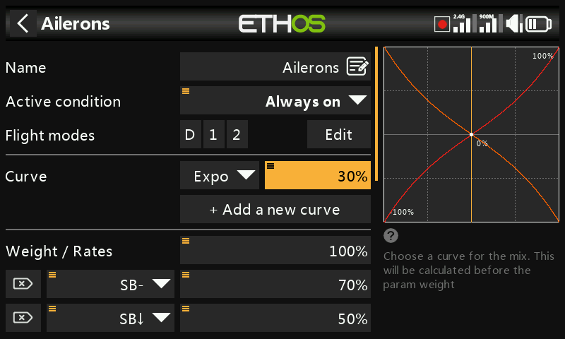
Toute courbe préalablement définie dans Courbes peut être choisie à la place. Jusqu'à 6 courbes peuvent être empilées sur un même mixage, chacune avec sa propre condition — si plusieurs conditions sont vraies simultanément, la courbe la plus haute dans la liste l'emporte. Les courbes sont appliquées avant les débattements.
Débattements — une ou plusieurs lignes de pondération, chacune pouvant être conditionnée par un interrupteur, un interrupteur de fonction, un interrupteur logique, une position de trim ou une phase de vol. La première ligne est la valeur par défaut, active dès lors qu'aucune autre condition n'est remplie :
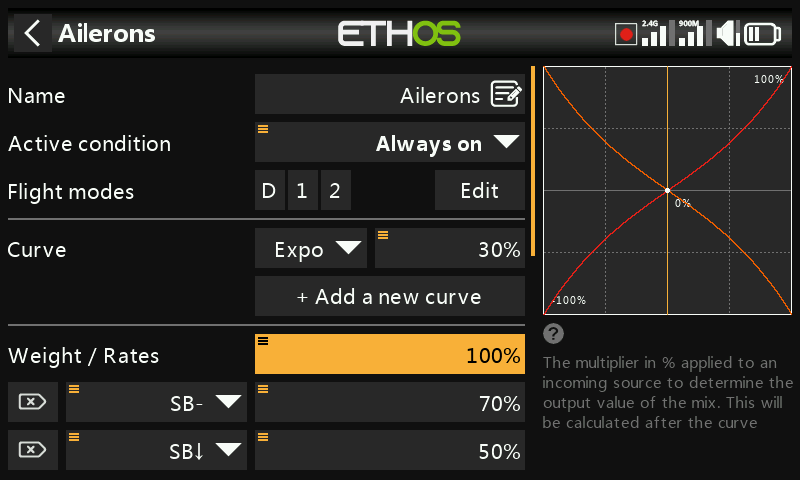
Plutôt qu'un pourcentage fixe, un débattement peut être piloté par une source — par exemple un potentiomètre, afin de l'ajuster en vol :
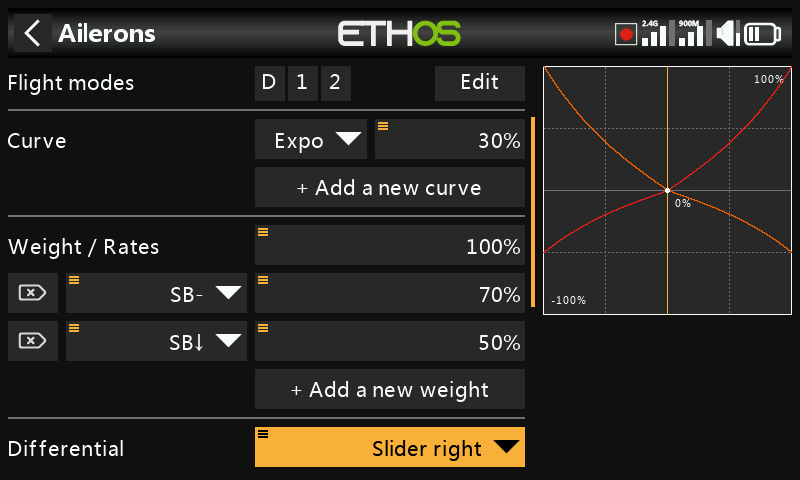
Différentiel (-100 à 100, 0 par défaut) — donne plus de débattement dans un sens que dans l'autre. Pour les ailerons, c'est l'astuce classique consistant à débattre davantage vers le haut que vers le bas afin de réduire le lacet inverse. Affiché uniquement lorsque le mixage comporte plus d'une voie de sortie ; le différentiel n'a de sens qu'avec une configuration de sortie de type empennage en V ou double aileron.
Nombre de voies / sorties — combien de voies de sortie ce mixage pilote et à quelles sorties physiques elles correspondent :
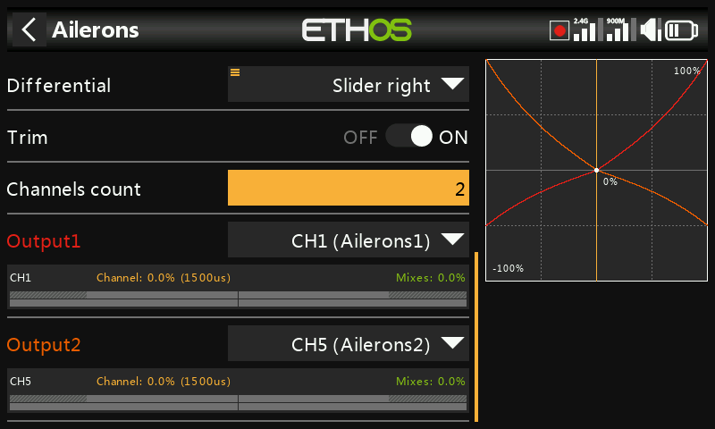
Un appui long sur ENT sur une voie de sortie ailleurs dans l'interface
(par exemple dans Sorties) ramène directement à cette page.
Le mixage des gaz¶
Le mixage des gaz est un mixage de type ailerons/profondeur/dérive auquel s'ajoutent des options de sécurité propres au moteur.
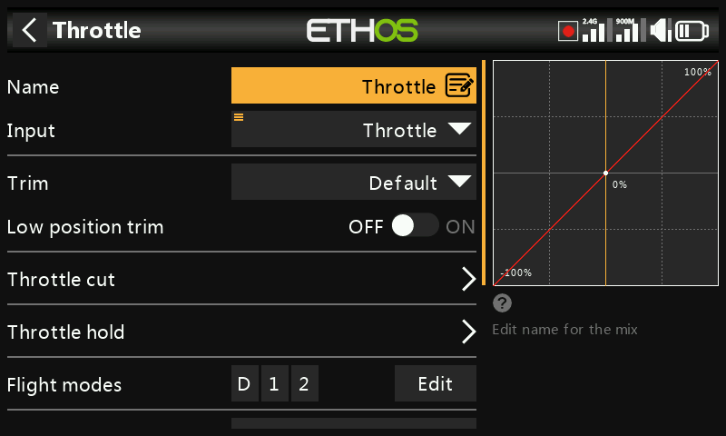
Entrée — la source des gaz, normalement le manche des gaz, mais remplaçable par un potentiomètre, un curseur, un interrupteur, un trim, une voie, un axe de gyroscope, une voie d'écolage, un chronomètre ou toute autre source.
Trim de ralenti — pour les moteurs thermiques, permet à un trim dédié d'ajuster le régime de ralenti sans modifier la position plein gaz. Avec le trim de ralenti activé, la voie des gaz se situe à -75 % lorsque le manche est au ralenti bas, et le trim des gaz ajuste alors le ralenti entre -100 % et -50 % :
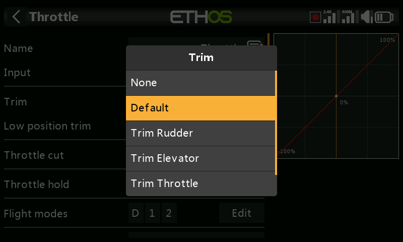
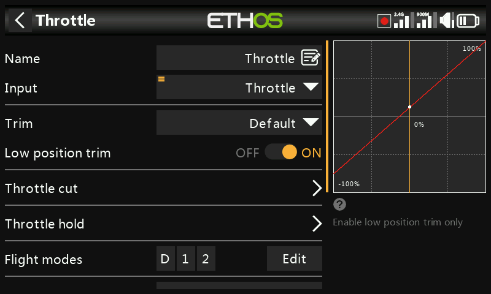
Coupure gaz — un verrouillage de sécurité strict : la voie n'est active qu'une fois que le manche des gaz est passé par le ralenti, de sorte qu'une manipulation accidentelle d'un interrupteur ne puisse pas lancer le moteur depuis une position plein gaz :
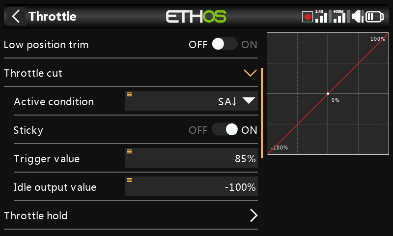
Maintien gaz — maintient la voie à une valeur fixe indépendamment de la position du manche, sans le verrouillage de sécurité offert par la coupure gaz :
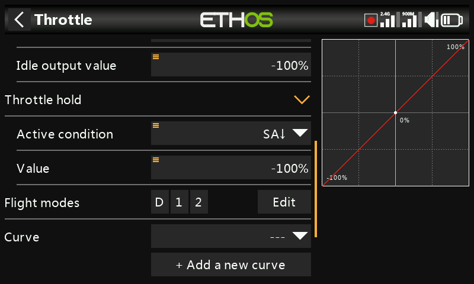
Le mixage des gaz expose également son propre nombre de voies de sortie, comme n'importe quel autre mixage :
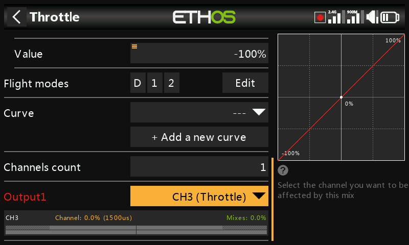
Verrouillage des gaz
Ethos exige que l'entrée du mixage des gaz passe par -100 % avant d'autoriser l'armement, quels que soient les réglages de coupure gaz/maintien gaz — un modèle créé par l'assistant de choix du modèle en tient déjà compte, mais un mixage des gaz construit manuellement devrait également le faire.
Bibliothèques de mixages¶
La bibliothèque de mixages prédéfinis de la boîte de dialogue Ajouter un mixage est adaptée à la catégorie de modèle choisie lors de la création du modèle — avion, planeur, hélicoptère et multirotor exposent chacun un ensemble différent :
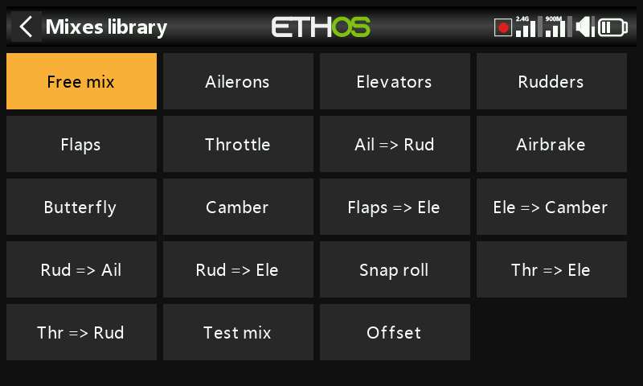
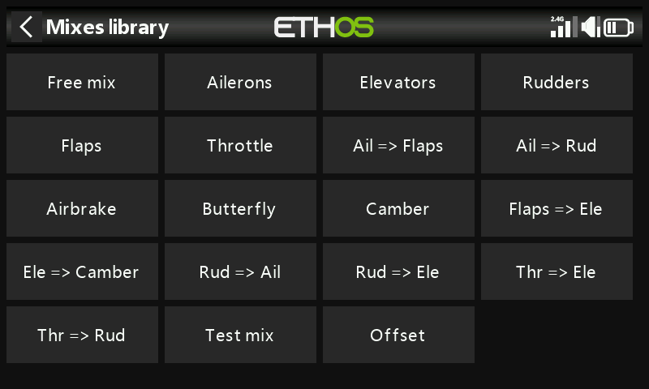
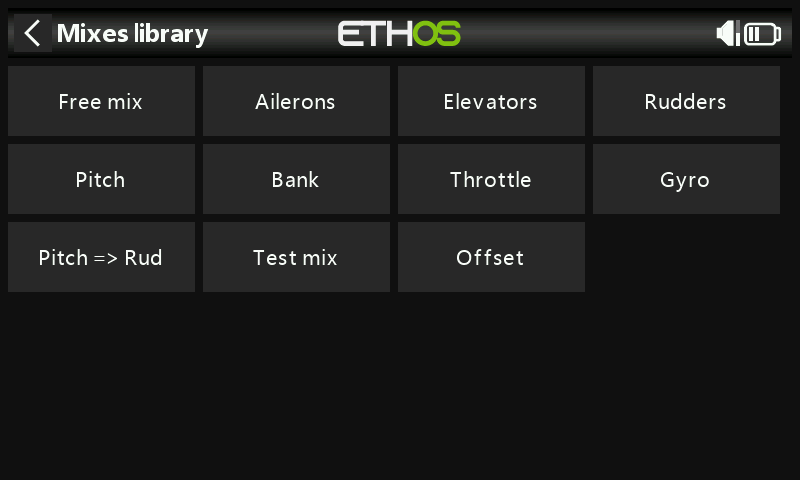
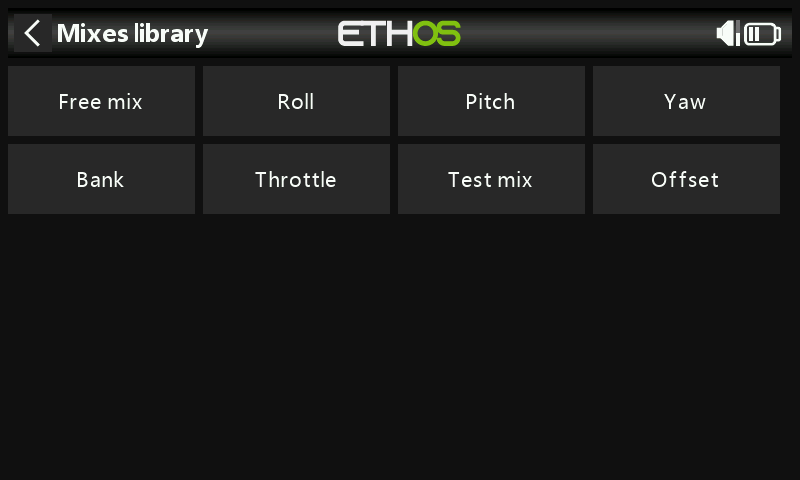
Chaque bibliothèque inclut également le Mixage libre — un type de mixage polyvalent sans entrée/sortie prédéfinie, plus souple que les entrées spécialisées mais nécessitant davantage de réglages pour parvenir au même résultat.
Vue par voie¶
Lorsque de nombreux mixages sont empilés sur une même sortie, il peut être difficile d'appréhender leur effet combiné depuis le tableau à plat ci-dessus. Sélectionner un mixage et choisir Vue par voie regroupe au contraire tous les mixages agissant sur une même sortie :
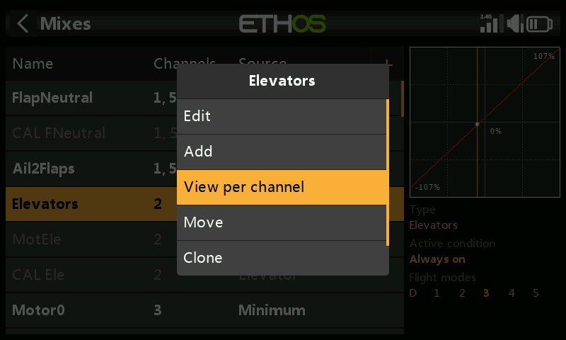
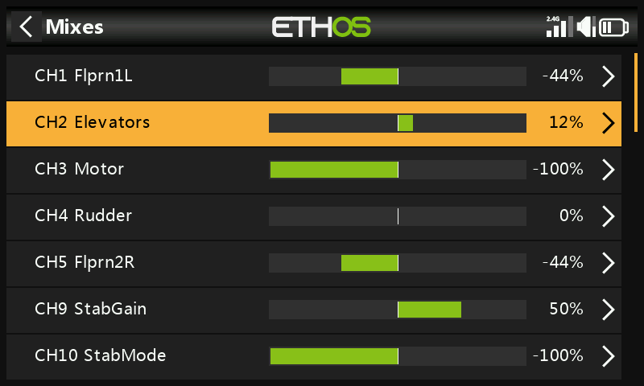
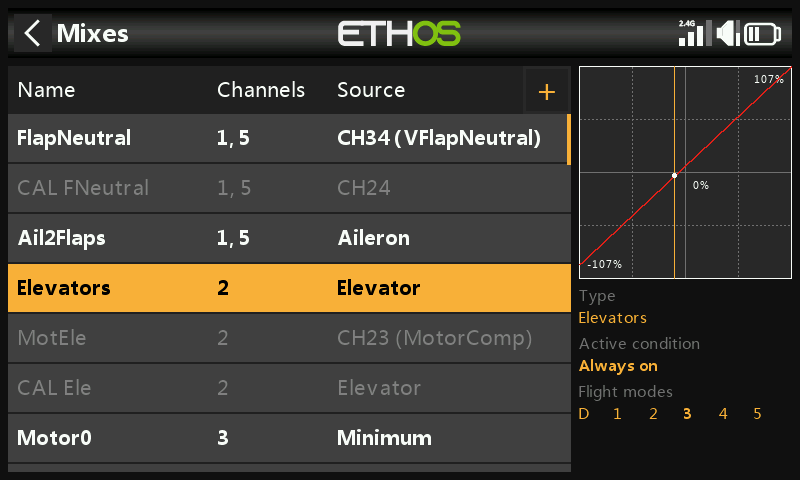
Développer la ligne de résumé d'une voie affiche chaque mixage y contribuant, avec sa sortie numérique et graphique en temps réel — utile pour vérifier précisément ce qu'un mixage secondaire (par exemple une compensation volets vers profondeur) ajoute par-dessus l'action principale du manche :
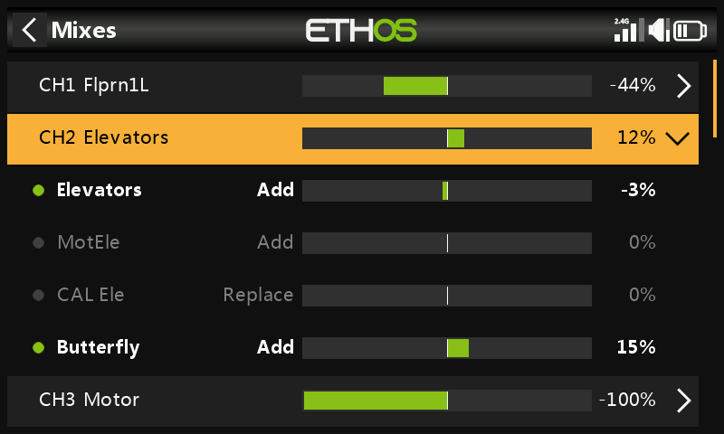
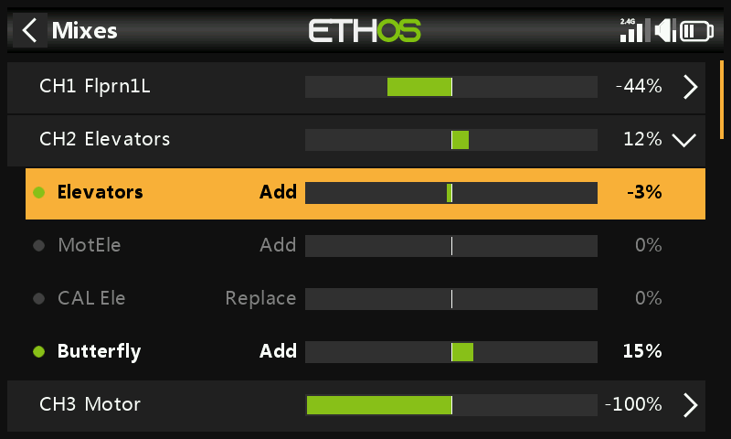
Sélectionner un sous-mixage au lieu de la ligne de résumé ouvre le même menu contextuel que dans le tableau à plat (modifier, revenir à la vue tableau, supprimer) :
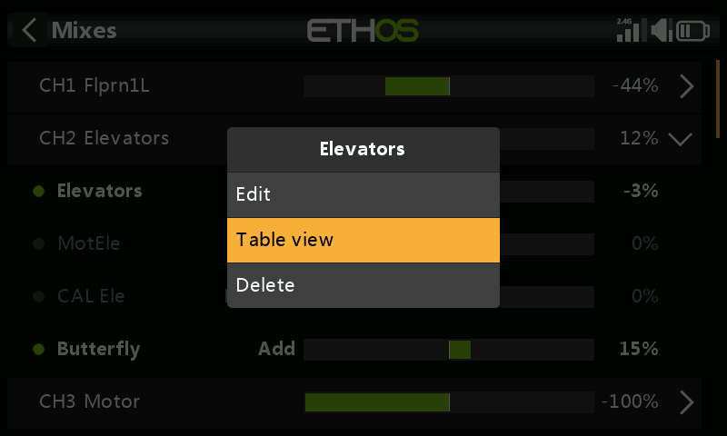